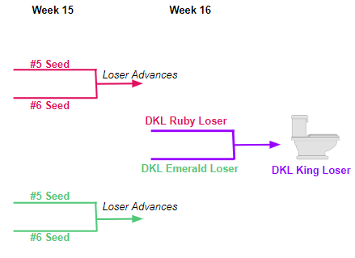
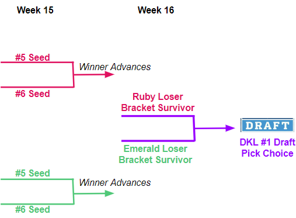

Year 3 & Beyond: Cost ADP Round According to Sleeper
Wavier Wire Pick Up Keeper: One Round Below ADP Year 1, Year 2+ ADP
You May Keep Up To 5 Players
You may use a higher pick to keep a player if actually keeper cost round isn't available
Draft Rules
Format: Snake Draft
Order is picked each season.
Position order is picked by: Winner of "Fight for The Pick", second place of "Fight for The Pick", Then reverse standings (i.e. Toliet Bowl winner, runner up, lowest seed elimated in playoffs, etc.)
Waiver Type: FAAB System ($100 Season Budget) (Change from Reverse Standings in 2022)
Daily Waiver System: Mon: FA, Tue: Closed, Wed: Waviers Run at 3am EST, Thur: Waviers Run then FA for Day, Fri: Wavers, Sat: Waviers, Sun: Waviers to FA for Day
Trade Deadline: Week 11 - Trades are not allowed after week 11
Draft Pick Trading Allowed: Yes
FAAB Cash Trading Allowed: Yes
Scoring Settings
Passing
Passing Yards: +0.04 per yard (25 yards = 1 point)
Passing TD: +6
2-Pt Conversion: +2
Pass Intercepted: -2
40+ Yard Pass TD Bonus: +2
Rushing
Rushing Yards: +0.1 per yard (10 yards = 1 point)
Rushing TD: +6
2-Pt Conversion: +2
Rush Attempts: +0.30
40+ Yard Rush TD Bonus: +0.50
Receiving
Reception: +1 (Full PPR)
Receiving Yards: +0.1 per yard (10 yards = 1 point)
Receiving TD: +6
2-Pt Conversion: +2
40+ Yard Reception TD Bonus: +0.50
Kicking
FG Made (0-19 yards): +3
FG Made (20-29 yards): +3
FG Made (30-39 yards): +3
FG Made (40-49 yards): +4
FG Made (50+ yards): +5
PAT Made: +1
PAT Missed: -1
FB Missed: -1
Team Defense
Defense TD: +6
Points Allowed 0: +10
Points Allowed 1-6: +7
Points Allowed 7-13: +4
Points Allowed 14-20: +1
Points Allowed 28-34: -1
Points Allowed 35+: -4
Less Than 100 Total Yards Allowed: +5
100-199 Total Yards Allowed: +3
200-299 Total Yards Allowed: +2
350-399 Total Yards Allowed: -1
400-449 Total Yards Allowed: -3
450-499 Total Yards Allowed: -5
500-549 Total Yards Allowed: -6
550+ Total Yards Allowed: -7
Sacks: +1
Interceptions: +2
Fumle Recovery: +2
Safety: +2
Forced Fumble: +1
Blocked Kick: +2
Speacial Team Defense
Special Teams TD: +6
Special Teams Forced Fumble: +1
Special Teams Fumble Recovery: +1
Speacial Teams Player
Special Teams Player TD: +6
Special Teams Player Forced Fumble: +1
Special Teams Player Fumble Recovery: +1
Misc
Fumble: -1
Fumble Lost: -2
Bonus
100-199 Yard Rushing Game: +1
200+ Yard Rushing Game: +2
100-199 Yard Receiving Game: +1
200+ Yard Receiving Game: +2
300-399 Yard Passing Game: +0.50
400+ Yard Passing Game: +1
100-199 Combine Rush + Rec Yards: +0.50
200+ Combine Rush + Rec Yards: +1
25+ pass completions: +1
20+ carries: +1
Toilet Bowl
4 teams, starts week 15
Bottom 2 Teams from Each Division
Winners in Loser bracket move to "Fight for The Pick" Bracket, where the winner gets first choice of draft position in the following season
Losers in Loser bracket move on to the Toliet Bowl.


Winners & Losers
Fantasy Champion
Passing of the Championship Trophy
Winner of "Fight for The Pick"
First choice of draft position
Loser of Toilet Bowl
Options: Loser License Plate Frame for Year or Card Board Cut Out of Champion for Display in Home